Outils de priorisation des risques chimiques
Quand les normes d'exposition manquent ou que les données métrologiques sont absentes, on priorise les risques par des approches qualitatives ou semi-quantitatives : bandes de danger (control banding), score combiné danger × exposition, démarche NIOSH OEB, outils sectoriels (IRPeQ pour les pesticides). L'objectif : décider de l'urgence d'agir sans attendre des mesures parfaites. En mine, c'est l'outil pour traiter le portefeuille de produits chimiques (souvent 200 à 800 références) au-delà du cadre normatif RSST.
Table des matières
- Démarche d'analyse de risque
- Évaluation quantitative vs qualitative
- Control banding : principes
- Outils par contexte
- Communication des risques
- Application terrain
- Ressources
Démarche d'analyse de risque
L'analyse des risques comporte 3 composantes
- Évaluation des risques.
- Gestion des risques.
- Communication des risques.
Principe général en 4 étapes
{kind=link}
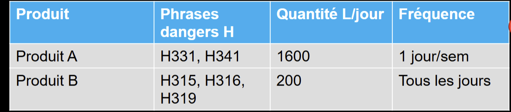
Toucher l'image pour l'agrandir{kind=link}
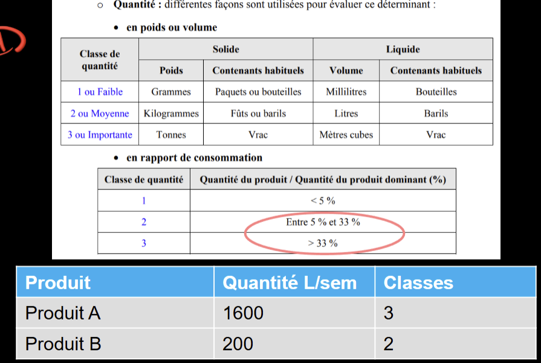
Toucher l'image pour l'agrandir{kind=link}
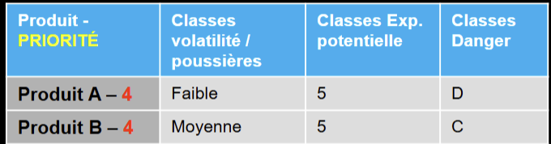
Toucher l'image pour l'agrandir| Étape | Action |
|---|---|
| 1 | Inventaire des produits et procédés |
| 2 | Classification du danger (SIMDUT et classes de danger/SGH, fiches toxicologiques, Cancérogénicité) |
| 3 | Estimation de l'exposition (quantité, fréquence, durée, voie, EPI, contrôles) |
| 4 | Évaluation du risque (combinaison danger × exposition) + sélection des mesures |
R = D × E. Voir Introduction à la toxicologie industrielle.
Évaluation quantitative vs qualitative
Quantitative
{kind=link}
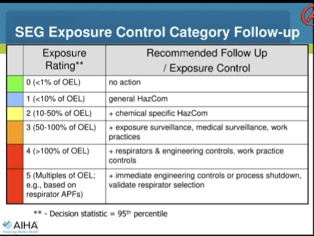
Toucher l'image pour l'agrandir- Mesurer l'exposition (échantillonnage de l'air, IBE) et comparer à une norme (VEMP, VECD).
- Méthode de référence quand normes et données fiables existent.
- Voir VEA et normes RSST.
Qualitative
{kind=link}
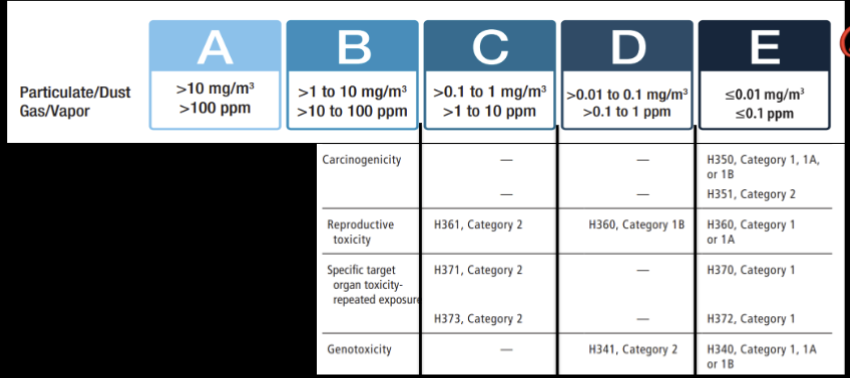
Toucher l'image pour l'agrandir- Détermine la classe de danger et l'exposition potentielle sans mesure exhaustive.
- Utilisée quand
- Pas de norme disponible.
- Pas de données métrologiques.
- Nombreuses substances (priorisation initiale).
- Décision rapide nécessaire.
Cas typiques de décision
| Cas | Normes ? | Données échantillonnage ? | Approche |
|---|---|---|---|
| 1 | Oui | Oui | Comparaison directe avec VEMP/VECD |
| 2 | Non | Variable | NIOSH OEB ; control banding |
| 3 | Oui (CIRC, R, S) | Non | Substitution prioritaire, mesures collectives, surveillance |
{kind=link}
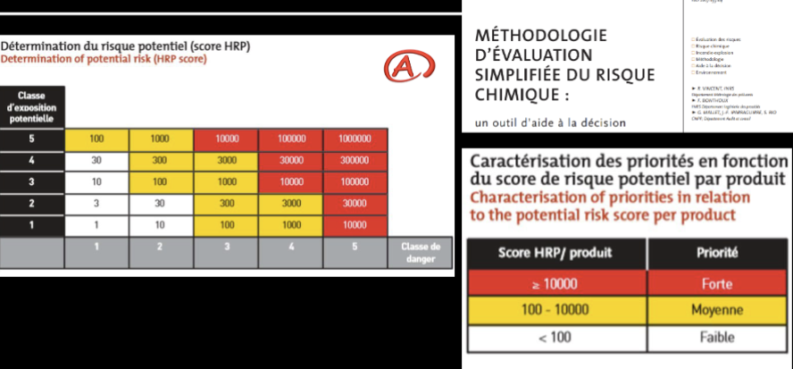
Toucher l'image pour l'agrandir{kind=link}
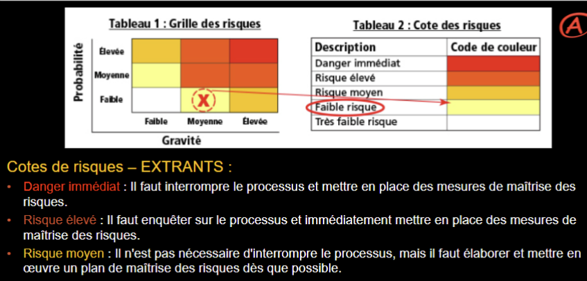
Toucher l'image pour l'agrandirControl banding : principes
Control banding = stratégie qui regroupe les substances en quelques bandes selon leur danger, puis associe à chaque bande un niveau de contrôle (de la ventilation générale jusqu'au confinement total).
Logique
| Bande danger | Niveau de contrôle |
|---|---|
| Faible (irritant léger, cat. 5) | Bonne ventilation générale, EPI standard |
| Modéré | Ventilation locale aspirante (LEV) |
| Élevé | Confinement, profondeur et charge mentale, ventilation locale forte, EPI spécifique |
| Très élevé (cancérogène, Sensibilisants respiratoires et cutanés respiratoire fort) | Système clos, EPI ultime, surveillance médicale |
{kind=link}
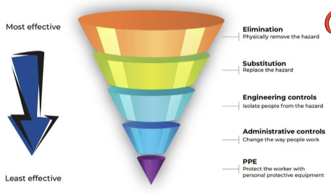
Toucher l'image pour l'agrandirCroisé avec la bande d'exposition (quantité, forme, volatilité, fréquence) pour déterminer la stratégie finale.
Référentiels
- COSHH Essentials (HSE, UK) : pionnier ; bandes basées sur les phrases R (anciennes), maintenant H.
- NIOSH Occupational Exposure Banding (2019, doc 2019-132) : démarche à 3 niveaux (tier 1 = phrases H ; tier 2 = analyse des données toxico ; tier 3 = expert toxicologue) pour générer une OEB (5 bandes A-E correspondant à des plages numériques).
- INRS : Méthode d'évaluation simplifiée des risques chimiques (ND 2233).
- Stoffenmanager (Pays-Bas) : web, basé sur control banding.
Outils par contexte
Outils terrain (généraux)
{kind=link}
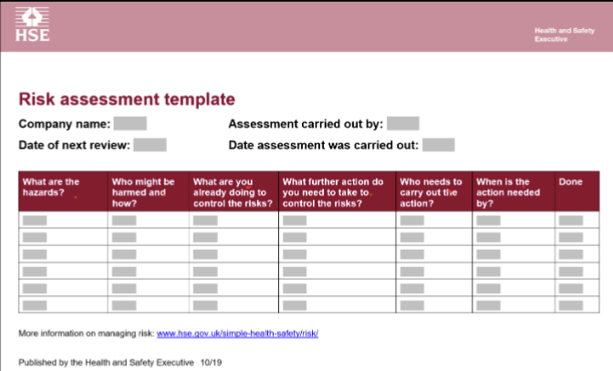
Toucher l'image pour l'agrandir{kind=link}
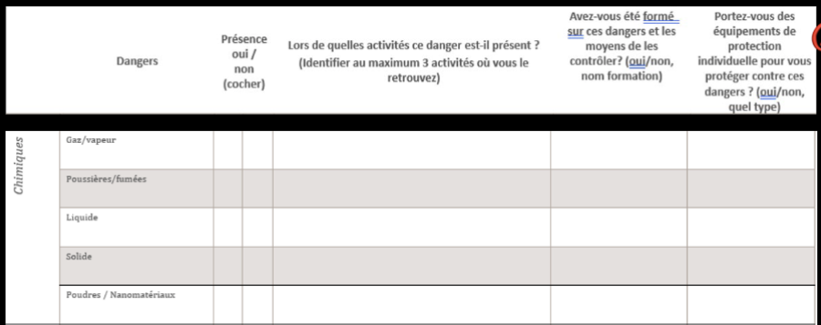
Toucher l'image pour l'agrandir- Outil A (référentiel sectoriel).
- Outil B (maison) : feuille de saisie terrain + feuille d'analyse. Recense les produits, opérations, durée, fréquence, EPI.
- Outil C : collaboration travailleurs-comité-SST pour validation.
Outils sectoriels
| Outil | Domaine |
|---|---|
| MiXie Qc | Multiexposition aux contaminants par additivité (voir Multiexposition aux contaminants) |
| IRPeQ | Pesticides au Québec (voir Pesticides) |
| NIOSH OEB | Substances sans VLE |
| COSHH Essentials | PME, large gamme |
| Stoffenmanager Nano | Spécifique aux nanomatériaux (voir Nanoparticules) |
| REACH (UE) | Évaluation et autorisation européenne |
Étapes d'application
Pour un atelier
- Inventaire : tous les produits chimiques utilisés, FDS à jour.
- Bandes de danger : attribuer selon les mentions H (SIMDUT/SGH) et la classification CIRC/RSST.
- Bandes d'émission/exposition : selon volatilité, quantité, fréquence, forme.
- Score de risque : combinaison des deux dimensions, parfois pondérée.
- Mesures : substitution, ingénierie, organisation, EPI, suivi.
Communication des risques
La 3e composante de l'analyse, souvent sous-estimée.
{kind=link}
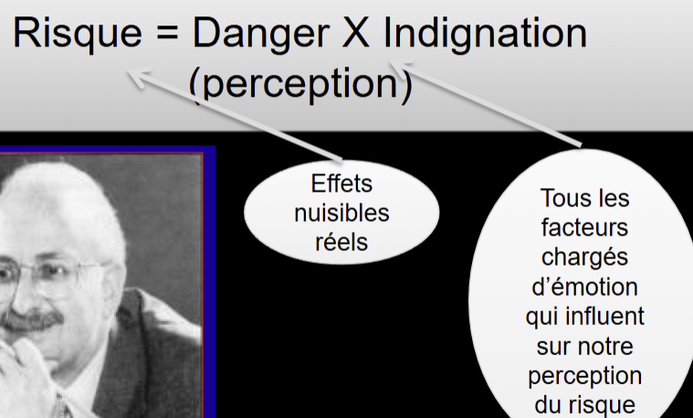
Toucher l'image pour l'agrandirPerception et dilemme
- Experts : raisonnent en probabilité, dose, exposition cumulée.
- Travailleurs / grand public : raisonnent en représentations (gravité, contrôle, équité, familiarité).
- Décalage = méfiance. Le risque perçu n'est pas le risque mesuré.
Nouvelle équation
R_perçu = D × E × facteurs de perception (familiarité, choix, équité, gravité, confiance).
À cibler pour améliorer la communication
{kind=link}
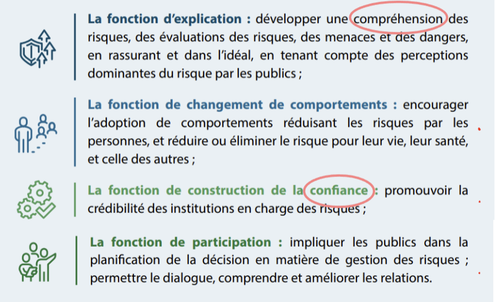
Toucher l'image pour l'agrandir- Écoute active et reconnaissance des préoccupations.
- Vocabulaire accessible.
- Transparence sur l'incertitude.
- Implication des travailleurs dans la décision.
- Messages cohérents au fil du temps et entre les sources.
Application terrain
Un site minier typique gère 200 à 800 références de produits chimiques (réactifs d'usine, carburants, lubrifiants, solvants d'atelier, peintures, biocides, désinfectants, gaz comprimés). Mesurer chacun à la VEMP est impossible. La priorisation est l'outil structurant.
Démarche-type en mine
| Étape | Outil | Livrable |
|---|---|---|
| 1. Inventaire | Registre central FDS, audit ateliers | Liste exhaustive + procédé d'usage |
| 2. Tri rapide (bandes) | NIOSH OEB / Stoffenmanager / COSHH Essentials | Top 20-50 produits prioritaires |
| 3. Évaluation quantitative | Échantillonnage IRSST T-06, IBE | Cartographie d'exposition par GHE |
| 4. Multiexposition aux contaminants | MiXie sur les postes les plus exposés | Rapport multiexposition |
| 5. Hiérarchie des moyens | Substitution, ingénierie, organisationnel, EPI | Plan d'action priorisé |
| 6. Suivi | Indicateurs KPI hygiène | Tableau de bord SST |
Indicateurs typiques (suivi multi-annuel)
- % de produits prioritaires (bandes D-E) avec stratégie de contrôle documentée.
- % de GHE évalués dans les 5 dernières années.
- Nombre de substitutions réalisées par an.
- Nombre de dépassements VEMP (chronique).
Cas pratique : atelier mécanique
Atelier de 30 mécaniciens, 80 produits chimiques. Application du control banding : 5 produits classés bande D-E (anciens dégraissants chlorés, certaines peintures à isocyanates, brasures au cadmium). Action prioritaire : substitution des chlorés par dégraissants à base aqueuse, fermeture des bains de dégraissage, P100 imposé pour les opérations cadmium. Le reste du portefeuille reste sous contrôle par ventilation générale + EPI standard.
Ressources
| Document | Type | Source |
|---|---|---|
| NIOSH Occupational Exposure Banding (2019-132) | Guide | NIOSH |
| COSHH Essentials | Outil web | HSE UK |
| Stoffenmanager / Stoffenmanager Nano | Outil web | TNO |
| MiXie Qc | Outil web | IRSST + UdeM |
| IRPeQ | Outil web | MELCCFP |
| Méthode INRS ND 2233 | Guide | INRS |
Articles wiki connexes
- Introduction à la toxicologie industrielle
- Toxicité, dose-réponse et DL50
- SIMDUT et classes de danger
- Multiexposition aux contaminants
- Pesticides
- Nanoparticules
- Démarche AREC
- [[Wiki SST/20 - Articles internes/60 - Prévention et programmes/Hiérarchie des moyens d
Pages qui pointent ici (7)
- 🎯 Démarrage rapide, conseiller SST Hygiène industrielle
- 🎯 Démarrage rapide, direction et RH Hygiène industrielle
- 🏠 Wiki Hygiène industrielle, mines Hygiène industrielle
- Démarche en hygiène industrielle Hygiène industrielle
- Évaluation et mesure Hygiène industrielle
- Multiexposition aux contaminants Hygiène industrielle
- SIMDUT et classes de danger Hygiène industrielle